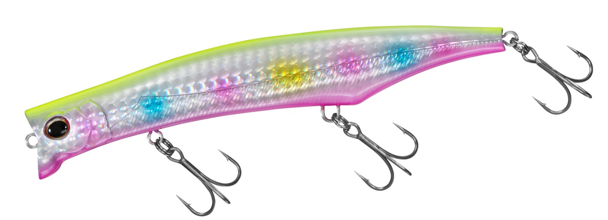

モニカ125F ジェットブースト
（シャローランナー）
モニカ125F ジェットブーストはSHIMANO（シマノ）のシャローランナーです。
エクスセンスから登場した、水面直下〜30cmのシャローレンジ攻略に特化した125mmモデル。重心移動機構ジェットブーストによる平均60mを超える飛距離と、流れの中でも破綻しないアクションで、河川のドリフト釣法で真価を発揮するのが最大の魅力です。
スペック
- メーカー
- SHIMANO（シマノ）
- タイプ
- フローティング（シャローランナー）
- 全長
- 125mm
- 自重
- 22g
- レンジ
- 水面直下〜0.3m
- フック
- #4×3
- 飛距離
- 61m（メーカー公表値）
- ターゲット
- シーバス
- 価格
- 2,250円（税別）
- 発売
- 2024年9月
▼今すぐチェック

モニカ125F ジェットブーストの特徴
水面直下〜30cmを機敏に泳ぎ、アップでもダウンでも破綻しないドリフト向きのシャローランナー
-
ジェットブーストで安定した飛距離と素早い立ち上がり
キャスト時はメインウエイトが後方へ移動し、風の影響を受けやすい状況でも安定した飛距離を実現。着水後はウエイトが即座に戻り、リトリーブ開始直後からシーバスを誘える。
-
シャローレンジを保ちつつレスポンスを高めたフェイスデザイン
浅いレンジをキープしながらロール主体のハイレスポンスなアクションを出すため、モニカ独自のフェイスデザインを採用。ロール角を大きく設計し、ベイトライクな艶めかしい泳ぎを目指している。
-
ダウンでも破綻しない安定したウォブンロール
アップクロスからダウンに入っても動きが破綻せず、足元まで泳ぎ切る。わずかな水圧でアクションし始めるので、流れを利用したドリフト釣法と相性が良い。
モニカ125F ジェットブーストの使い方
基本はただ巻き。着水後にラインテンションをかけるだけですぐに泳ぎ出すので、着水直後からバイトチャンスを作れる。
真価を発揮するのはドリフト釣法。シーバスが定位していそうなピンをイメージしながら上流側へキャストし、立ち位置・着水点・流速・巻きスピードを調整してトレースコースを作る。アップでもダウンでも泳ぎ切るので、魚の目の前を横切らせたり追い抜かせたりと、1本で探り切れます。
モニカ125F ジェットブーストの得意な状況
水深の浅い河川や干潟など、広大なシャローエリアを探りたい状況が最大の出番。
流れのヨレや明暗、ベイトが集まっているピンスポットを、ドリフトで丁寧に攻めたい場面で選びたい1本です。
ワンポイント
着水音でシーバスの目線がルアーに向いた直後に泳ぎ出せるのがモニカの強み。着水したらすぐにラインテンションをかけて、アクションを立ち上げましょう。
レンジを浅く保ちたい時は、ロッドを立て気味にして巻くとより水面直下を引きやすくなります。
モニカシリーズの使い分け
| モデル | 全長／自重 | 得意な場面 |
|---|---|---|
| 100F | 100mm | レンジ0〜10cm・約49mの飛距離・マイクロベイトや表層のライズに |
| 125F | 125mm／22g | レンジ水面直下〜30cm・平均61m・ドリフトでピンを攻める（本記事のモデル） |
モニカは100Fと125Fの2サイズ展開。水面直下の表層を意識した小型ベイトパターンには100F、広いシャローやドリフトで流れを攻めたい時は125Fと使い分けるのが基本だ。
オススメカラー
モニカ125Fは全13色展開。オススメのカラーを厳選して紹介します。
イワシをイミテートした定番カラー。水質がクリアな晴天時に、警戒心の高いシーバスにも自然にアピールできる。
クリア〜ややステインで活躍するボラカラー。強いフラッシングで高いアピール力を発揮する。
ナイトゲームで高い実績を誇るレッドヘッド。光量の少ない状況でも存在感を出せる。
濁りに強く、ナイトゲームでも見やすい万能カラー。状況を手早くサーチしたい時のパイロットカラーに。
モニカ125F ジェットブーストに似ているルアー
-
 カゲロウ124F
メガバス
詳細はこちら＞
カゲロウ124F
メガバス
詳細はこちら＞
124mmのシャローランナーの定番。流れの変化で揺らぐアクションが持ち味で、河川のシャローでモニカ125Fと使い分けたい1本。
-
 アイザー125F
ブルーブルー
詳細はこちら＞
アイザー125F
ブルーブルー
詳細はこちら＞
同じ125mm・22gのシャローランナー。強めのアクションで広く探る先発役として、ドリフトで攻めるモニカ125Fと組み合わせやすい。
-

シャロール126F ダイワ 詳細はこちら＞126mm・22gのダイワのシャローランナー。ロールにフラツキが混ざるアクションで、同じサイズ帯のローテーションに加えたい。